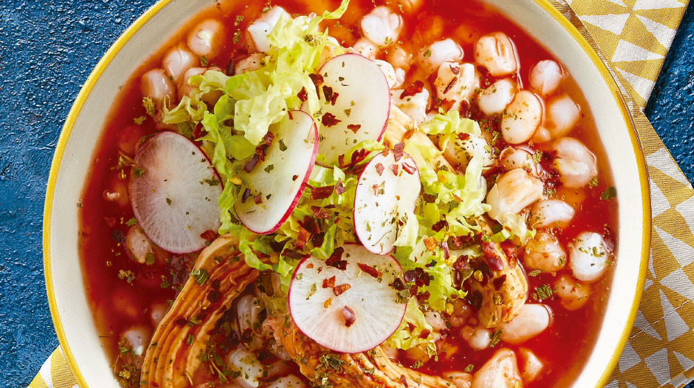

Pozole

Pozole is a fan favorite in my family. Though particularly a holiday comida, you cant go wrong making this any given weekend to enjoy with your family. This recipe is a traditional Mexican pork soup cooked with hominy and flavoured with red guajillo chiles for a deep smoky flavor. Serve with shredded lettuce or cabbage, cilantro, radishes, onions or whatever you prefer.
Ingredients
- 1lb pork shoulder, 1lb boneless pork loin, 1/2 pound pork neck bones
- Water to boil pork and chile sauce ingredients, plus two cups to blend with chile sauce
- 1 head garlic, cloves peeled
- Spices- oregano, ground cumin, salt
- 1 tomato
- 4 ounces dried guajillo chiles, stemmed and seeded
- 2 (16 ounce) cans white hominy, drained
- Shredded lettuce or cabbage
- 1 small onion, diced
- 4 limes, quartered
Steps
- Place all pork cuts in a large pot; cover with water. Add 1 head of garlic and salt to taste. Bring to a boil, reduce heat and simmer until meat is tender and cooked through, about 1 hour.
- Stir in hominy; bring to a boil and simmer for 20 minutes.
- Place tomato and guajillo chiles in a pot and add enough water to cover; bring to a boil. Cook until chiles are soft, about 15 minutes; drain.
- Place tomato and chiles with salt, 1 clove garlic, oregano, and cumin in a blender; add 2 cups water. Blend until smooth then strain. Set chile sauce aside.
- Shred pork with 2 forks. Discard bones and garlic.
- Stir chile sauce and shredded pork into the pot. Simmer pozole until flavors have blended, about 5 minutes.
- Ladle pozole into bowls and top withshredded lettuce or cabbage and onion; serve with lime wedge on the side.